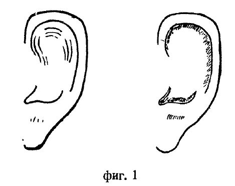
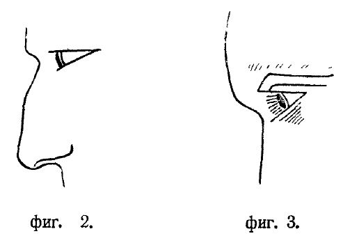
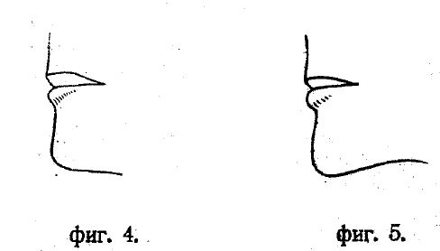

Беседа 1954 от 3877 · Беинса Дуно
Честното ухо
Размишление
Дошло е време, когато човек трябва да има знания и да ги прилага. Ако имаш знания, а не знаеш как да постъпваш, идват страдания. Казваш: „Човек съм, това е достатъчно“. – Кои са отличителните качества на човека? Човек е онзи, който мисли право, чувства право и постъпва право. Ще кажете, че тези качества са второстепенни, те не определят понятието „човек“. Според мене, каквото определение да дадете за човека, вие трябва да мислите право. – „Какво нещо е правото мислене?“ – Оставете този въпрос настрана. Ще вървите в правия път. – „Какво нещо е правият път?“ – Оставете и този въпрос настрана. На фиг. 1, стр. 104, е нарисувано приблизително човешкото ухо. Ще изучавате ухото и ще се ползвате от това знание. – „Ухото не е човекът.“ – Оставете това настрана. Знаете вече, че качествата на човека са да мисли, да чувства и да постъпва право. Другите неща ще оставите настрана. – „Аз имам желание да мисля право.“ – Не е важно твоето желание. Ще мислиш право! Твоите мисли са резултат на нещо; твоите чувства са резултат и твоите постъпки са също резултат. Значи едновременно ти имаш три резултата. – „Аз мисля право.“ – Като мислиш право, ти не си главният фактор на мисленето. Преди тебе много други са мислили право. Ще мислиш, както са мислили хората преди тебе. Трябва ли лисицата и вълкът да питат как и какво да мислят? Лисицата ще мисли като майка си и баща си; и тя ще мисли за кокошките и за курниците, в които се крият. Вълкът ще мисли като своите родители: за някое агънце, за някоя овца или за някое говедо. Той ще прави научни изследвания, как да влезе в кошарата на овцете и да задигне една овца. Като я изяде, търси някое говедо и него да опита, да направи разлика между месото им.
Някой казва, че обича парите. Като намери касата отворена, бръква вътре и изважда една златна монета. Мислите ли, че той иска да знае свойствата на златото? Ни най-малко. Той се интересува от парите. Ако няма никой около него, ще пъхне бързо монетата в джоба си. Ако има някой, ще държи ръката си отворена, с което иска да каже: „Честен човек съм, нямам намерение да задържам монетата за себе си“. Честен си, защото над тебе има друга власт, друга сила. Изкуство е, без страх от властта да вземеш парите и да ги сложиш на място. Това значи честен, свободен, отворен човек.

Когато се говори за ухото, разбираме физическия човек. Като погледнеш ухото, ще познаеш как даден човек постъпва на физическия свят. Ако направите една услуга на честния човек, или имате вземане–даване с него, той веднага ще благодари. Ако е господар, ще каже: „Дайте на Иван да се нахрани добре“. После ще погледне обувките на слугата и ще каже: „Дайте му едни обувки, да не ходи бос; дайте му дрехи да се облече“. Ако честният човек е умен, той знае, че като се отнася добре със слугите си, и те ще се отнасят добре с него. Ако не е умен, ще каже: „Иван може да ходи със скъсани дрехи и обувки“. Нека всеки се опита да нарисува своето ухо, да види каква работа му предстои. Ако не работи върху себе си, той не би могъл да приложи нито една точка към линията на честността. Ако горната част на ухото е заострена, това показва преминаване от животинското царство към човешкото. Защо ухото на животните е заострено горе? Така заострено, то представлява антена, чрез която животното се справя с външния свят. То насочва ухото си нагоре, да възприема трептенията и вълните от външния свят и да се справя с тях. Например, лисицата или вълкът, като насочват ухото си нагоре, съобразяват да нападат, или да отстъпват.

Като гледате образа на носа във фиг. 2 и го поставите в обратно положение, ще видите, че той прилича малко на ухото. В образа, носът има малка гърбавина, която не отговаря на честния нос. Той трябва да е прав, без никаква кривина. Всяка кривина е отклонение от правия път, то говори за известен недъг в човека. Ако закривяването е в долната част на носа, това показва песимистично настроение в човека. Когато човек желае много неща, а не може да ги постигне, първо става философ, а после песимист.
Значи песимизмът е философия на непостигнатите желания. В живота всичко е постижимо, но трябва да знаеш как да постъпваш. За да постигнеш желанията си, трябва да имаш 5 неща: правилно ухо, правилен нос, правилни очи, правилна уста и правилна брада. Правилните очи подразбират правилно виждане. Ще виждаш нещата вътрешно, със съзнание. Виждаш един предмет, но го пожелаваш за себе си. Това не е виждане. Да виждаш нещата, това значи да разбираш къде е мястото им, да не желаеш да ги преместваш и да не ги пожелаваш за себе си. Вървя по улицата и виждам, че един камък не е на място. Навеждам се, вдигам го и го поставям на определеното за него място. Аз се справям с камъка, защото зная къде е мястото му. Ако не знаеш къде е мястото на камъка, ще те сполети голяма неприятност. Камъните, това са човешките думи. Слагай всяка дума на мястото ѝ, да не спъва никого.

Стискането на устните е резултат на волев акт. Обаче който стиска устните си, не е умен. Така гледа природата на нещата. Гневливите хора си стискат устните. Те изразходват много енергия, а малко придобиват. Има гневливи деца, които същевременно са крайно упорити. Майката казва: „Направи това!“ Щом не слуша, идва законът, тояжката. В края на краищата, то ще направи това, което майката иска. И възрастните хора са упорити, като децата. Каквото им се каже, не слушат, но като дойде природата със своята тояжка, те казват: „Ще слушаме!“ Коя е тояжката на природата? – Болестта. Като заболееш, лежиш 3–4 месеца на легло, характерът ти се смекчава и ти казваш: „Да ми помогне Бог да стана от леглото, ще слушам и майка си, и баща си“. Като оздравееш, забравяш всичко и дохождаш на същото положение. Обаче болестта отново те дебне. Фиг. 5 представлява честна брада. Като изучавате тази брада, обръщайте внимание на геометричните линии в нея. Ако брадата отдолу е почти права, това показва човек, който не е заинтересуван от нищо. Ако тази линия хлътва навътре, чувствата играят главна роля. Човек с честна брада гледа широко на живота. Той не обсебва нищо. Всеки предмет за него е толкова важен, колкото може да подпомага неговото развитие. Той иска всички хора около него да бъдат добри, за да могат да живеят добре помежду си. На хора с честни бради всякога може да се разчита. Дотук ви дадох доста материал, който може да ви обърка. Първо, започнете да изучавате ухото. Каквото научите, задръжте го за себе си. Като го разберете и съпоставите с другото знание, тогава може да го изнесете и пред другите хора. Ако някой иска да му се каже нещо повече, посочете му ръководствата по френология, хиромантия, физиогномика – и нека чете. Науката не е за печалба. Ще учиш, за да познаваш хората, кой е честен и кой не е. Ако от невидимия свят слезе комисия да разгледа ушите на хората, не зная колко от тях ще бъдат без дефект. Между тях ще намери много фирми, които не са работили правилно. За сегашните условия ушите на хората са търпими.
Ухото може да се раздели на три части, именно: Първата, горната част, показва какви са външните условия на живота – благоприятни, или неблагоприятни. В тази част е скрит умственият капитал, с който човек разполага. Срещам едно бедно дете, сираче, веднага поглеждам ухото му. Ако горната част е добре оформена, казвам: Макар и без родители, това дете разполага с голям капитал, лесно ще се справи в живота. Ще дойде отнякъде един благодетел, ще обърне внимание на това дете и работите му ще тръгнат напред. Срещам друго дете, княжески син. Ухото му горе е сбутано, неоформено. Казвам: Това дете е родено при добри, богати условия, но само̀ то няма умствен капитал в себе си. Няма да се минат 10 години, то ще изгуби условията, при които е родено, и ще изпадне в положението на обикновен дървар. То няма вътрешни условия в себе си, не може да си пробие път. Ухото е жив капитал. Имаш ли този капитал, свободно ще разполагаш с него. Всички разумни същества от видимия и невидимия свят, които са взели участие в изработването на твоето ухо, се интересуват от това, какво ще стане с тебе. Щом ухото ти е добре оформено, те създават добри условия за тебе и ти се развиваш правилно. Щом си дошъл на земята, няма да те оставят да пропаднеш. Значи горната част на ухото показва интереса на съществата от Божествения свят към човека. Средната част на ухото показва интереса на съществата от духовния свят – ангелите и светиите, към човека. Третата, долната част на ухото показва интереса на хората към човека. Щастлив е онзи, за когото се интересуват съществата от трите свята. Това говори за красиво, добре оформено ухо. Чувате ли да се казва за някого, че сам трябва да си носи товара, ще знаете, че някъде ухото му не е оформено, нещо му липсва.
Казваш: „Аз мисля за Божествения свят, мисля и за ангелския свят“. – Това не е достатъчно. Ще мислиш и ще разбираш тези светове. Какъв смисъл има да говориш за Божествения свят, без да разбираш съществата, които живеят там? Говориш за ангелския свят, без да разбираш ангелите като същества на разумността. Всяко същество, което проявява разумност, било птица, млекопитаещо или човек, има допирна точка с ангелския, или духовния свят. Докато не познаваш отличителните качества на трите свята, всякога ще се объркваш. Питаш: „Къде е Божественият свят?“ – Около тебе. Трябва да знаеш неговите качества. – „Къде е физическият свят?“ – Около тебе. Всичко, което виждаш с физическите си очи, е физически свят. – „Какво сме научили, като сме работили толкова години?“ – Ако имате резултат, научили сте нещо; ако нямате резултат, нищо не сте научили. Какъв смисъл има само да вярвате, че Бог съществува, ако реално не сте проверили това?
Казвате, че съществуват ангели. – Опитали ли сте това? Ходили ли сте в духовния свят? Ходили ли сте на угощение в духовния свят, както ви канят хората на земята? – „В миналото може да съм ходил.“ – Носиш ли някакъв спомен от това посещение? Жалко е, че някой се отзовал на поканата на ангелите, но повече не се върнал на земята, да разкаже на хората къде е бил и какво е видял. Той е в положението на момък или мома, които взаимно се поканват на угощение, но повече не се връщат назад. Казват: „Тези млади забягнали някъде“. Близките им се безпокоят какво е станало с тях, да не би да ги е сполетяло някакво нещастие. Всичко е възможно. Казвам: Младите избягали от своите близки, защото и двете семейства не били съгласни за тяхното събиране. След няколко години те отново ще се върнат при родителите си. Изкуство е да се отзовеш на поканата на ангелите, да ги посетиш, но след това да се върнеш на земята и да разкажеш на близките си какво си видял и чул. И това се случва, но рядко.
Когато хората умират, казваме, че са забягнали някъде. Така и момата забягва, напуска бащиния си дом и отива при своя възлюбен. Пред майка си и баща си плаче, дава вид, че не иска този момък. Така тя скрива намерението си, докато един ден се чуе, че пристанала на своя възлюбен. Това са любовни работи, т.е. търговски сделки на дребно. След две години отношенията им се развалят, започват се друг род сделки. Не са лоши любовните работи, но не са постоянни. Днес имаш разположение към една мома, на другия ден търсиш друга. Това са все търговски сделки. Отиваш в един магазин. Веднага търговецът ви поздравява и любезно запитва: „Какво обичате, господине? Заповядайте!“ Слугата се върти около вас и като разбере какво искате, веднага започва да мери захар, ориз и др. Щом ви вземе парите, търговецът се покланя и ви изпраща с думите: „Пак заповядайте“. След вас влиза друг клиент. И с него постъпва по същия начин. Връщаш се вкъщи и преглеждаш парите си, да видиш каква е била любовта на търговеца. Поглеждаш ориза в книгата и виждаш, че в него има много камъчета. Връщаш го на търговеца. Той се извинява, че слугата не е внимавал, дал от второ качество ориз. – „Ще изправим грешката“ – казва търговецът. За да познаете човека, трябва да видите как постъпва той, когато не е заинтересуван от вас.
Представете си, че пътувате в планината. Дохождате до един извор. Там е седнал един пътник, който вади хляб от торбата си и яде. Щом ви види, ако е честен, с красиво оформено ухо, той веднага ще ви поздрави и ще каже: „Заповядайте, седнете при мене. Приятно ми е да споделя хляба си с вас. Ще си поговорим малко и после ще продължим пътя си“. Ако този човек има заострено ухо, ще скрие хляба в торбата си и ще каже: „Дълъг път ме чака, трябва да пазя хляба си, да не остана гладен“. В първия случай пътникът е човек с голям капитал, богата фирма. Във втория случай той постъпва като търговец с малък капитал. Не е достатъчно да казваш, че фирмата ти е честна, но да знаеш с какъв капитал разполагаш, на кого колко дължиш и как се справяш със своите дългове. Някога висиш във въздуха, дължиш на много хора, а не искаш да знаеш за плащане. Това е нечестна фирма. – Как се познава коя фирма е честна и коя – нечестна? – По ухото. Достатъчно е да погледнете ухото на човека, за да разберете какъв е той и с какъв капитал разполага.
Как можете да моделирате ухото си, да подобрите своето състояние? Пипни ухото си и виж каква е линията на горната част. Ако не е добре закръглена, а повече заострена, това показва, че не си щедър. Значи имаш дефект в ухото си. За да подобриш тази линия, представяй си, че си богат и щедро даваш на хората, без да очакваш нещо от тях. Ако правиш това всеки ден, в една година ти ще измениш линията на ухото си, макар и с половин милиметър. Казваш: „С такива работи ли ще се занимавам?“ – С какви други работи ще се занимаваш? Ако работиш мислено цяла година, да си представяш, че си богат човек и щедро даваш на всички бедни, ти наистина ще забогатееш. По този начин ще изпратиш в Божествения свят една мека, приятна вълна, която ще се върне към теб и ще подобри положението ти. Няма нещо, което човек си въобразява и да не става. Онези хора, на които мислено помагаш, на първо време са невидими, но постепенно се въплътяват. Един ден те ще те срещнат и ще ти благодарят. Това може да стане, може и да не стане, важното е, че ти ще подобриш линията на ухото си. Като подобриш ухото си, ще се освободиш от мисълта, че си беден. Щом имаш капитал, трябва ли да се обезсърчаваш? Следователно отвреме–навреме хващай ухото си и мисли за неговото оформяване. Това действа възпитателно и смекчава характера. Докато не придобиеш резултати, не говори нищо на хората.
Упражнение: Хвани долната част на ухото си с трите пръста на дясната ръка: палецът отдолу, а показалецът и третият пръст – отгоре, и мисли за подобряване на ухото си. Лявата ръка сложи на кръста. – „Какво ще придобия от това упражнение?“ – Все ще придобиеш нещо. Какво ще придобиеш, като държиш ръцете си в джобовете? Това е положението на човешкия егоизъм. Някой слага ръцете си в джобовете, друг – отзад. Нито едното положение е добро, нито другото. Добре е да застанеш прав, с левия крак малко напред, и да хванеш с дясната си ръка долната част на дясното ухо. Това положение е добро. Нормално положение на тялото е онова, което не предизвиква никакво стълкновение с окръжаващите. Ще застанеш прав, без никакво напрежение на мускулите. Някой наклонява главата си надясно или наляво; после я навежда назад и напред. Това не са естествени положения. Добре е да държите така тялото си, че да изразява положение на почивка. Ако краката са много прибрани, това означава зависимост от нещо. Естественото положение на краката е да бъдат малко отворени. Левият крак малко напред и настрана. Човек се движи отляво към дясно. Това е еволюционният път.
И тъй, за да се домогне до Божественото, човек трябва да има предвид: развитието на своето тяло, във височина и широчина; оформянето на носа, очите, ушите и устата, като се спазват правилните математически отношения между тях. Дали правилно си поставил ръцете или краката си, това определя твоето издигане или слизане. Когато говорителят поставя ръцете си на масата, откъм дланта, с това той иска да каже, че е готов да служи на Божественото, а не на човешкото. Ако сключиш ръцете си, това е неестествено положение. Важно е да поставите тялото си в такова положение, че да могат енергиите на природата да протичат свободно през него. Само така може да подобрите здравословното състояние на организма си. Добре е отвреме–навреме да прекарвате пръстите си по външната линия на ухото. Пазете се да не стане това навик. Гледайте на ухото си като на скъпоценност. Благодари на Бога, че ти е дал хубаво, красиво ухо. Като се обезсърчиш, прекарай пръстите си по външната линия на ухото и кажи: „Капитал е това“. Ако живееш така, че ухото ти постепенно се деформира, имаш право да се обезсърчаваш.
Като ученици, работете върху ухото си, да предадете красива линия на горната му част. От нея зависи по-нататъшното оформяне на ухото. Тя е мярка. Като деля ухото на няколко части, имам предвид областите, през които човек минава: областта на мислите, на чувствата и на волята. Горната част на ухото трябва да бъде най-широка и постепенно да се стеснява. Значи външните условия го стесняват. Долната, месестата част на ухото, може да бъде дълга или къса. Това се дължи на прииждане или прекратяване на жизнените енергии на природата. Ако долната част се намалява, това показва, че този човек се изражда. Щом месестата част е малка, изражда се не само отделният човек, но и целият му род. Ако средната външна част на ухото е издадена, това показва активност – чувствата са добре развити. Колкото повече се намалява издутата част, и активността се намалява. Между челото и ухото има известно отношение.
Помнете: Външният живот, външната обхода на човека зависи от ухото. Не можеш да имаш добра обхода, ако нямаш добре развито ухо. Ухото е добре развито, когато гънките му представляват правилни линии. Тези линии са живи. Чрез ухото човек се научава да слуша. Чрез него той се свързва с разумния свят, който се проявява чрез природата. Ухото се развива правилно заедно с външната природа. Всичко, което се твори в нея, работи и за човешкото ухо. Носът пък показва какви сили се крият в човека, за да изработят неговите форми и органи. Значи ухото определя външната обхода на човека, а носът – силата на човешкия характер. Външната обхода е средата, в която действат мислите и чувствата. Те трябва да бъдат разумни. Това зависи от носа. Като знаеш това, ще се отнасяш внимателно с носа си, няма да го буташ, да го дърпаш грубо. Ще изправяш кривите мисли на дядо си и баба си, докато си създадеш правилен нос. Носът ти може да не е правилен, но ще работиш усилено с мисълта си, докато си създадеш какъвто искаш нос. Човек има не само физическо тяло, но и духовно, което е пластично, пъргаво и податливо на всички добри мисли. Първо там ще създадеш носа си, а после на физическото тяло. Какъвто е ембрионът в утробата на майката, такова ще бъде детето ина физическия свят. Каквато е майката, такова ще бъде и детето. Следователно, каквото мислиш и чувстваш, това ще стане.
Като сте дошли на земята, ще изучавате Любовта, Мъдростта и Истината във всичките им прояви. В Божествения свят Любовта представлява обективната страна на живота. На физическия свят Любовта е нещо невидимо и неосезаемо, а в Божествения свят тя е толкова материална, колкото материалните неща на земята. Божествената Мъдрост определя взаимните отношения между любещите се същества. Божествената Истина определя мястото, където ще живеят любещите се. Какви са качествата на човека, който обича? Първо, той трябва да има обект, към който да отправи обичта си. Бог е създал света, за да прояви любовта си чрез него. Защо е необходимо това, не питай. Аз никога не питам и не мисля защо трябва да обичам някого. Обичам го, нищо повече. Какво се разбира под „обич“? Обичта и любовта не търпят нищо користолюбиво. Защо? Защото съществото, което обичам, е създадено от Бога. Щом е така, то е свободно. Никой не може да го обсебва. Следователно ще обичам това същество, както Бог го обича. Колкото аз обичам това същество, толкова и Бог ще ме обича. И колкото мене обича Бог, толкова обича Той и това същество. Питаш: „Колко ме обича Бог?“ – Колкото и ти обичаш. Такова е отношението на Първата Причина към човека. Обичта е необходима, понеже без обич не може да има никакъв умствен напредък. Забележете, мнозина обичат талантливите, гениалните хора, а малко са, които обичат простите хора. Развитието на човека зависи от това – колко хора го обичат. Ако майка ти, бащи ти, дядо ти, баба ти, прадядо ти те обичат, от тебе човек ще стане. Ако не те обичат, от тебе нищо не може да излезе.
Казвам: Обичайте, понеже от вас зависи да ви обичат. Има ли нещо мъчно в това, да обичаш? – „Как да обичам?“ – Най-лесно е да обичаш, както Бог обича. Ти обичаш кокошката за месцето ѝ; обичаш богатия за парите му; обичаш градинаря за плодовете; обичаш бакалина за стоката му. Друг е въпросът, ако обичаш човек, който няма нито пари, нито градина, нито стока. Все го обичаш за нещо. – „Какво печеля от тази обич?“ – Много нещо печелиш. Той е барометър, чрез който те проверяват доколко Бог те обича. Любовта на Бога е сила, която може да те направи истински човек. Ти започваш да мислиш и чувстваш правилно. Само Любовта на Бога е в състояние да отвори сърцето ти да даваш. Като видиш, че някой няма обувки, ще купиш един чифт и ще му ги подариш. В замяна на това ще получиш 10 чифта. Без да искаш, ще получиш десетократно за това, което си направил. – „Какво ще правя тези обувки?“ – Деветте чифта ще раздадеш, а единия ще задържиш за себе си. Ако всички хора са готови да дават от това, което имат, икономическите въпроси щяха да се разрешат правилно.
Сега, ние се отдалечихме от чистата наука. Бащата казва на сина си: „Синко, трябва да учиш, да станеш богат, виден човек“. – Това не е целта на живота. Да знаеш, това има смисъл, но да забогатяваш, това не осмисля живота. Като имаш знания, ти ще познаваш характера на хората, ще можеш да се справяш лесно с тях. Не се стреми да придобиваш милиони, но да познаваш хората по ушите им. Погледнеш ухото на някого и казваш: Този човек е честен. Погледнеш ухото на друг и казваш: Фирмата на този човек е разклатена, скоро ще фалира. И по своето ухо ще познаеш, ще фалираш ли, или ще живееш. Каквото и да е ухото ти, не се обезсърчавай. Няма да фалираш. Щом работиш, фирмата ти ще се развива добре.
Като изучавате ухото, вие ще се домогнете до големи подробности. В науката за ухото се крият големи тайни. Достатъчно е да изучите вътрешната страна на ухото – охлювът, да видите какво знание се крие там. Колкото и да е скрит охлювът, природата е изнесла всичко навън. Казано е, че няма нищо скрито–покрито. Обаче засега малцина са проникнали в знанието, скрито в охлюва. В ухото е написан животът на човека от ред поколения. Който знае да чете, ще види как са живели неговите деди и прадеди, колко години са живели и т.н. Много знания се крият в човешкото ухо, но ние се спираме главно върху външната страна. Като разглеждам ухото на честния човек, казвам: Това ухо не е на светия, нито на идеален човек, но на човек, който минава от животинско в човешко състояние. Той започва да мисли и казва: „Досега ядох и пих, постъпвах несправедливо, но отсега нататък ще живея като честен, справедлив човек. На никого няма да причинявам пакости“. С честния човек всеки може да живее. Съдружник може да станеш с него, може да учите заедно, в редки случаи ще се скарате. Да се върнем към упражнението. Ще хванеш ухото си долу и ще кажеш: „Искам да бъда здрав. Желая здравето и на всички хора“. После, ще хванеш ухото си горе и ще кажеш: „Желая да бъда умен като всички умни хора, които са живели преди мене“. Най-после, ще хванеш средата на ухото си и ще кажеш: „Искам да бъда активен, експедитивен в чувствата си“. Това упражнение има резултати, подобни на тия при хомеопатията, с която някои лекари си служат. Други лекари си служат с алеопатия, със силни дози. Те казват: „Отрова с отрова се лекува“. А при хомеопатията методите са подобни на тия на Любовта. Досега всички хора са били алеопати. Време е да минат към хомеопатия – от силни към слаби дози.
Често говорите за красотата, искате да бъдете красиви. Красотата има отношение към правата мисъл. За да мислиш право, трябва да чуваш добре. Вътрешната страна на интелектуалния живот има отношение към обонянието, към носа, към дишането. Човек трябва да диша дълбоко, за да възприема благоуханието на нещата. Чрез обонянието се развива умът и човек привиква да мисли право. С обонянието е свързан езикът. Той има три функции: От една страна, той изпитва вкуса на храната. Той е инспектор, който проверява работите. Втората функция на езика е да преобръща храната. Третата функция на езика е да говори. И вие, като езика, имате три функции: работите във физическия свят, чувствате в астралния и мислите в умствения свят. Мисълта се изразява чрез говора. И ухото едновременно възприема и хубави, и лоши работи. Ако дадеш израз на лошите работи, ухото се наказва, като го теглят за долната част. Така постъпва учителят с учениците си; така постъпва и майката с непослушното си дете. Тя го хваща за ухото, дърпа го надолу и казва: „Синко, ще живееш дълго време, ако постъпваш добре и ако си разумен. Ако не си разумен, животът ти ще се съкрати“. Има смисъл да теглят ухото ти, но умен да го тегли. Не се оставяй на глупав да тегли ухото ти. Не чакай други да теглят ухото ти, сам го потегли. Единственият човек, който има право да го тегли, това си ти. Опъни надолу ухото си и кажи: „Господи, помогни ми да стана разумен, както Ти си предвидил“. Опитайте се всички да нарисувате дадените чертежи на отделен лист. За онзи, който познава ухото, това е лесна работа. За онзи, който не го познава, е мъчно. Колкото и да не го познавате, опитайте се всички да прерисувате чертежите. Не се страхувайте от неразбраните неща. С усилие неразбраните неща стават разбрани. Като мислите за ухото, имайте предвид външната обхода на човека. Който има добре оформено ухо, той всякога постъпва добре. Това зависи главно от горната част на ухото. Ако ухото горе е широко, човек всичко обмисля. Когато ухото горе не е широко, човек влиза в стълкновение с всички: този блъсне, онзи блъсне; на този каже обидна дума, на онзи каже обидна дума. Ако ухото не е добре оформено, а носът – правилен, той спасява положението. Страшно е, ако ухото не е оформено и носът не е правилен. Красивото ухо изправя носа и обратно, правилният нос изправя ухото. Като работи съзнателно, човек може да изправи дефектите на своя характер, както и удовете на лицето си. Както хирургът може да направи какъвто ще нос на болния, така и вие в няколко години можете да изправите носа и ухото си. И аз мога да направя това, но не искам да се занимавам с изправяне носовете на хората. И тъй, сложете в ума си мисълта, да си създадете правилен нос и красиво ухо. Лесно не се изправя ухото. Който може да внесе най-малкото подобрение на ухото си, той минава за гениален човек. Най-малката линия да измените, това внася подобрение във вашия характер. Понеже ухото мъчно се изменя, затова човек лесно се познава по него.
Обикновено, децата приличат на родителите си или по очите, или по ушите, или по носа. Погледнеш детето, по ухото прилича на майка си; по носа прилича на баща си. За да различаваш едно ухо от друго, трябва да правиш наблюдения върху ушите на животните – тревопасните и месоядните. После, изучавайте ушите на различни хора, да видите каква грамадна разлика има между тях. Не е достатъчно да се каже, че едно ухо е заострено, а друго – закръглено. По това се познава какви енергии действат през едното ухо и през другото. Много работа се иска, докато острото ухо се закръгли. Горната част на ухото трябва да бъде широка, с правилна крива линия. Това говори за широта и простор в човешкия характер.
Т. м.
Лекция от Учителя, държана на 8 февруари 1933 г., София, Изгрев.